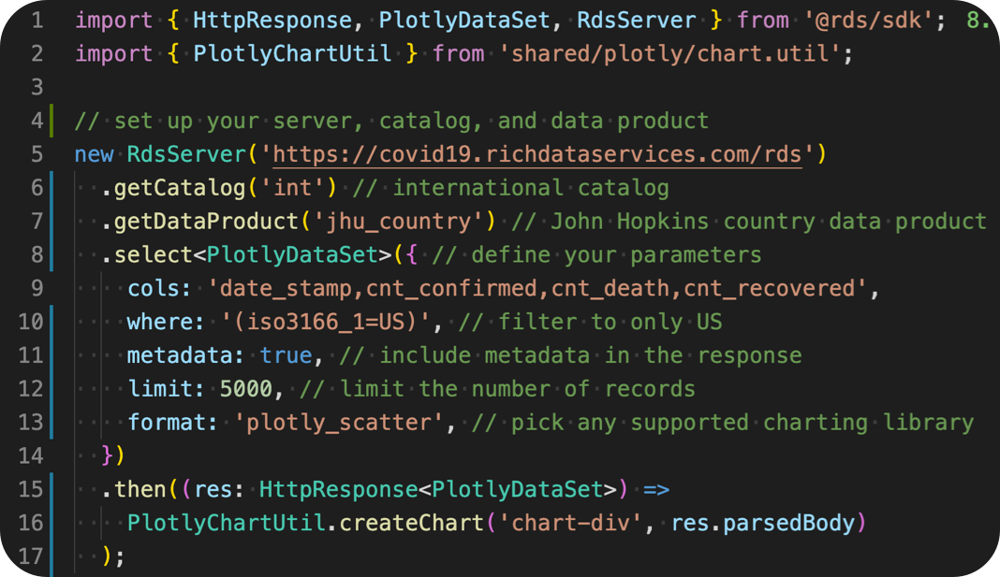

So you found some COVID DATA...now what?
Choose a path
OR
Select a path above to learn how RDS can help, or scroll down and get right to the code!
Total cases confirmed, recovered, and deaths
The data we are using for this visualization has already been aggregated to indicate the total counts per day.
- check_circleA single RDS API query
- check_circleNo more parsing various data files
- check_circleNo need to keep up with the data each time it changes
- check_circleSwitching charting libraries is as simple as changing one paramter
Try a different charting library, it's easy!
Chart Type